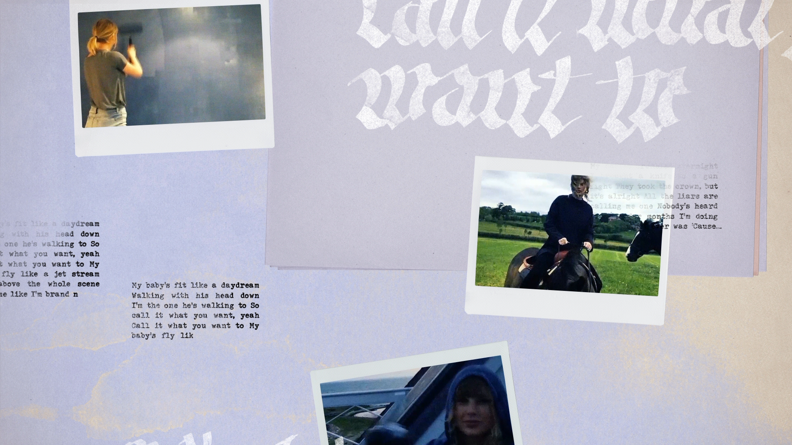

Call it what you want
"Call It What You Want" é uma canção gravada pela cantora e compositora norte-americana Taylor Swift para o seu sexto álbum de estúdio Reputation (2017). A faixa foi lançada em 3 de novembro de 2017, como single promocional do álbum. Swift co-escreveu e co-produziu a canção com Jack Antonoff (Email do Jack)